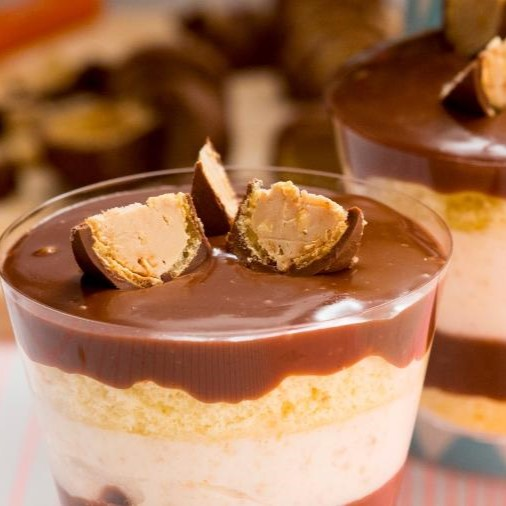

PAVÊ DE SONHO DE VALSA

INGREDIENTES
- • 4 Maçãs raladas com casca
- • 1 xícaras de açúcar mascavo
- • 2 ovos
- • 1/2 xícara de óleo
- • 1 xicara de açúcar branco
- • 1 colher de sopa rasa de fermento em pó
- • 2 colheres de canela em pó
- • 1 pitada de sal
- • 2 xícaras de trigo
- • 1/2 xícaras de uva passa
- • 1/2 xícaras de nozes picadas
- • 1 pitada de sal
COBERTURA
- • 3 colheres de manteiga
- • 2 colheres de farinha de trigo
- • 2 colheres de açúcar
- • 1 colher de canela
(Receita para uma forma de 20cm)
PASSO A PASSO
1
Em um boow coloque os ovos, óleo e açúcar, mexa bem os ingredientes com o fuet até dissolver todo o açúcar, acrescente a farinha peneirada com fermento e a canela e misture bem, acrescente as uvas passa, nozes e o sal, misture novamente e coloque em uma forma untada e enfarinhada.
2
Misture a manteiga, o açúcar, e a farinha até formar uma farofa, adicione a canela e coloque essa farofa por cima do bolo ainda cru, leve ao forno pré-aquecido 180° graus por 35 minutos.